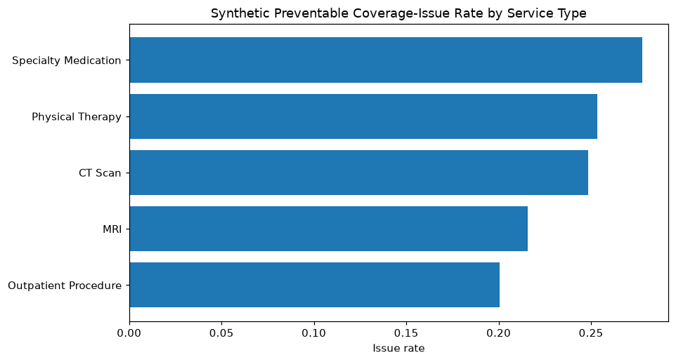

Coverage can fail before the claim is ever submitted.
(Levey, 2022)
(Loewenstein et al., 2013)
(Claxton et al., 2025)
Today, coverage problems surface after care: the claim is denied, the patient gets an unexpected bill, and almost no one appeals. The project began with medical debt and narrowed to the health-insurance understanding gap. Coverage Navigator moves the check upstream, to before care is delivered.
Forecast. Explain. Verify.
Appointment scheduled (hospital or clinic)
↓
Coverage Navigator reviews the case in the background
↓
Low risk → proceeds | High risk → insurer specialist queue
Low confidence (new product, missing history, conflicting documentation)
→ escalated; the model abstains
↓
Insurer claims specialist verifies benefit documents,
agrees or overrides with a reason
↓
Specialist contacts the hospital's intake / prior-auth team
↓
Coverage clarified → patient receives care
The model does not make the final coverage decision. It finds similar past cases and patterns, flags risk, and explains why a case may need review. It does not read plan rules. The insurer's claims specialist verifies the case and remains accountable.
Model signals
Plan information, prior authorization, network status, documentation completeness, code alignment, service type, and historical claim patterns.
Human-in-the-loop
Human review, audit logs, data-quality checks, subgroup monitoring, escalation, and abstention when confidence is insufficient.
Beyond accuracy
Fairness, workflow adoption, patient experience, alert utility, privacy compliance, and organizational capacity matter alongside technical performance.
Portfolio demonstration data
The figures below use synthetic data only and illustrate the monitoring a real pilot could require.



Trust is the scarce resource.
On held-out synthetic data the model reaches an ROC AUC of 0.77. The design favors precision over recall: fewer alerts, more of them real. Staff quickly learn to ignore a system that raises too many false alarms, and an ignored alert prevents nothing.
| Threshold | Recall | Precision | Cases sent to review |
|---|---|---|---|
| 0.20 | 0.76 | 0.40 | 46% |
| 0.30 | 0.56 | 0.45 | 30% |
| 0.40 | 0.49 | 0.58 | 20% |
| 0.50 (default) | 0.39 | 0.66 | 14% |
At 0.50, two out of three alerts are real and 14% of cases go to review. Catching three-quarters of issues would mean reviewing nearly half of all appointments, with most alerts false. The cost of the precision-first choice is real: about three in five issues are not flagged, and those misses may not fall evenly across patient groups, which is why subgroup monitoring and a low-confidence escalation path are built in. The threshold belongs to the workflow owner, not to a library default.
CMS, insurers, and providers
CMS and participating insurers would fund and govern the pilot. Insurers employ the claims specialists; hospitals and clinics schedule care and submit prior-authorization requests. The hardest challenge is institutional: if the system works, it prevents denials insurers would otherwise not pay. Insurers stay in only if fewer appeals, less rework, member satisfaction, and regulatory goodwill outweigh that cost.
An 18-month implementation test
An 18-month pilot across 25 hospitals and 500 clinics, in three phases: planning and design (months 1–6), integration and go-live (months 7–12), and evaluation and decision (months 13–18), with results reported to CMS and insurers. Instructor feedback challenged the scale and absence of cost figures, so this version adds a governance check between phases, resource categories, and explicit privacy planning. Expansion happens only if the pilot succeeds.
Responsible deployment is a design decision.
Healthcare organizations are rapidly adopting AI-assisted tools while governance expectations are evolving. The opportunity is to shape responsible workflows before opaque automation becomes normalized.
“One of the strongest submissions I received.”
The feedback highlighted the clear executive ask, strong explanation of forecasting versus automated decision-making, specific risk mitigations, human verification, and evaluation beyond model accuracy. It also identified concrete next steps: cost, urgency, privacy, and pilot realism.
The model is not the intervention.
Technical performance may justify a pilot. Long-term public value depends on governance, incentives, workflow integration, user trust, accountability, and the capacity to monitor and adapt the system over time.
Responsible AIHealthcare AIHuman-in-the-LoopPolicy AnalysisAI Governance